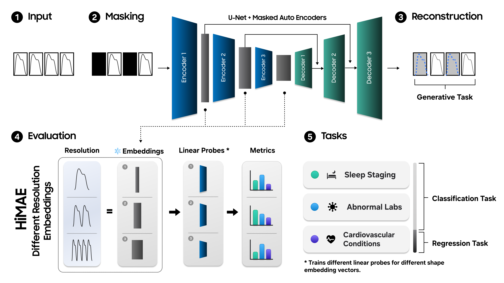
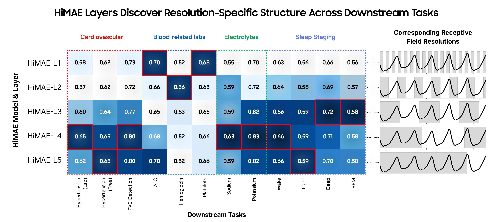
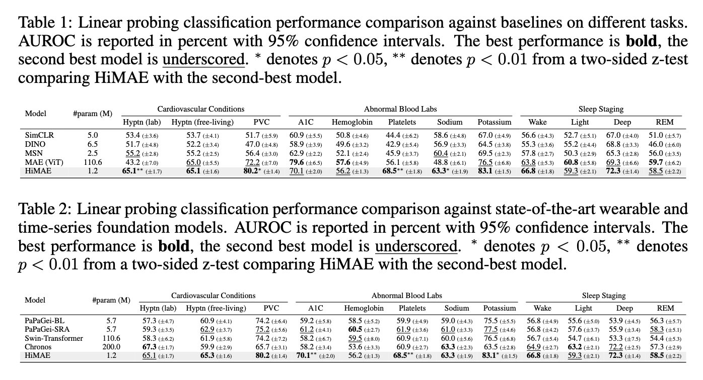
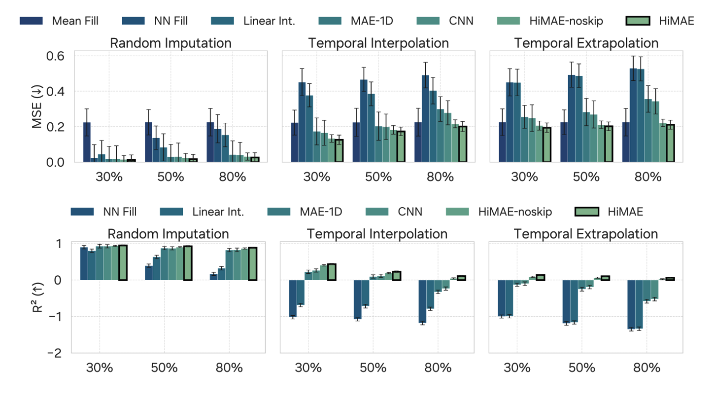

The resolution hypothesis emphasizes that meaningful patterns in time-dependent data can emerge at different time scales. In many real-world signals—such as data from wearables, sensors, or human behavior—important information may appear as rapid, moment-to-moment fluctuations or as slower, long-term trends. Relying on a single, fixed time scale can obscure these signals. By explicitly considering multiple temporal resolutions, models can better capture the structure of the data and reveal which time scales are most relevant for a particular outcome. In this view, resolution is not merely a technical detail, but a fundamental lens for understanding complex time-dependent phenomena.

HiMAE (Hierarchical Masked Autoencoder) is a simple, interpretable way to test and act on the resolution hypothesis: instead of forcing a model to compress every temporal pattern into a single representation, HiMAE produces a stack of embeddings, each associated with a different effective temporal scale. At a high level the model takes a multichannel sequence \(x\in\mathbb{R}^{C\times L}\), breaks it into non-overlapping patches (so \(N=L/P\) patches of length \(P\)), and randomly occludes a subset via a mask \(m\in\{0,1\}^N\) (expanded to the full time axis as \(m'\in\{0,1\}^L\)). The training objective is the familiar masked reconstruction loss applied only to masked positions:
\(\displaystyle \mathcal{L}(\theta,\phi) \;=\;\sum_{t=1}^{L}\frac{m'_t}{\sum_{u}m'_u}\,\big\lVert\hat x_t - x_t\big\rVert^2,\)
with \(\hat x=g_{\phi}(f_{\theta}(\tilde x))\) where \(\tilde x\) denotes the partially observed input. The crucial architectural choice is that \(f_{\theta}\) is a hierarchical 1-D U-Net style encoder: successive downsampling stages increase the receptive field so that each intermediate activation summarizes a progressively coarser temporal context. Rather than collapsing those activations into a single pooled vector, HiMAE exposes them as separate embeddings and evaluates each with a lightweight probe; this conversion of scale from a hyperparameter into an empirical probe is what lets HiMAE directly answer which temporal resolutions carry signal for a downstream task.
From a modeling-efficiency standpoint, U-Net hierarchies approximate the ability to access long-range context while remaining linear in sequence length. A D-layer hierarchical encoder expands an effective receptive field \(R_d\) roughly as \(\;R_d = R_{d-1} + (k-1)\prod_{i=1}^{d-1}s_i\;\) (where \(k\) is kernel size and \(s_i\) the stride at stage \(i\)), so depth yields exponential coverage in terms of strides while computation scales as \(O(L)\) for convolutional contractions and expansions. By contrast, full self-attention used in many transformer variants incurs \(O(L^2)\) time and memory in the sequence length due to the attention matrix. In practice this means a well-designed U-Net can capture the same coarse, global dependencies that attention provides but at a fraction of compute and memory, which enables smaller models, faster training, and truly on-device inference.
Conceptually, HiMAE therefore performs two things at once. It leverages masked reconstruction to learn temporally coherent features and it preserves the hierarchy of scales so those features can be inspected and compared. If a clinical label is best predicted from millisecond-scale morphology, the shallow embeddings will carry the signal; if a behavioral outcome depends on slow trends, deeper embeddings will dominate. Because the architecture is compact, these discoveries can be made without resorting to very large transformer models, making HiMAE a practical tool both for improving predictive performance and for surfacing which temporal resolutions matter in real-world time-series data.
Pretraining uses approximately 80,000 hours of wearable green PPG collected from tens of thousands of participants across multiple devices collected at Samsung Research Centers. Windows of 10 s at 100 Hz (L = 1000) are divided into patches. Optimization uses AdamW with warmup–cosine schedule; models trained up to 100k steps with large-batch protocols.
We assess generative reconstruction under three regimes—random imputation, temporal interpolation (contiguous gaps), and temporal extrapolation (future occlusion)—using held-out MSE and \(R^2\). For classification, we linear-probe pretrained encoders on 12 binary tasks across cardiovascular conditions, sleep staging, and abnormal laboratory prediction, reporting AUROC with bootstrapped confidence intervals.

A central contribution is the resolution probe: embeddings are extracted at multiple encoder depths (each representing a different effective temporal resolution) and probed independently. Different downstream tasks peak at different layers, revealing that predictive information is concentrated at task-specific temporal scales. This validates the resolution hypothesis and shows the model can be used as a discovery tool to determine the most informative resolution for a given clinical endpoint.
For classification, HiMAE often outperforms or matches substantially larger baselines against both SSL and Existing Foundation Models across cardiovascular, sleep, and lab prediction tasks while being far more compact (e.g., HiMAE base ≈1.2M parameters).

On generative benchmarks, HiMAE attains the lowest MSE and positive \(R^2\) even in challenging extrapolation scenarios, indicating robust reconstruction beyond mean-fill baselines.

The findings reframe resolution as a structural prior: rather than collapsing scale, exposing multi-resolution embeddings yields both improved performance and interpretability. HiMAE’s convolutional hierarchy provides a favorable inductive bias for wearable signals, allowing compact models to rival much larger transformers. Limitations include the focus on 10 s windows and PPG modality; extensions to longer contexts and multimodal signals (ECG, accelerometer, EEG) are promising future directions. Clinical validation of discovered resolution-specific signals is required before translation.
@inproceedings{lee2025himae,
title={HiMAE: Hierarchical Masked Autoencoders Discover Resolution-Specific Structure in Wearable Time Series},
author={Lee, Simon A and Tanade, Cyrus and Zhou, Hao and Lee, Juhyeon and Thukral, Megha and Khan, Md Sazzad Hissain and Lu, Baiying and Gwak, Migyeong and others},
booktitle={The Fourteenth International Conference on Learning Representations},
year={2026},
url={https://openreview.net/forum?id=iPAy5VpGQa}
}We thank Minji Han and Rachel Choi for their expertise in UX/UI design and for crafting the specialized visualizations not supported by standard Python libraries; their design contributions were essential to this work. We also thank Praveen Raja, Matthew Wiggins, and Mike Freedman for their invaluable feedback and insightful discussions throughout the project.